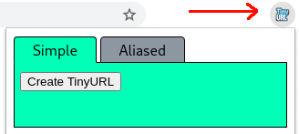
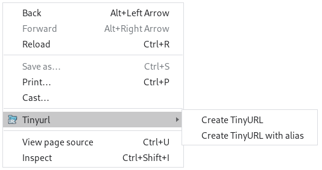

How to use
After installing the extension, there will be two ways to create a TinyURL. Those are described bellow:
- Using the extension menu: 
- Using the rightclick menu: 
By clicking the "Create TinyURL" button, the extension will create a tinyurl for the current page you are in, and it will copy the resulting url to the clipboard by default.
The aliased section will have an alias input for customizing the resulting TinyURL.
Click "Create TinyURL" to quickly create a shortened version of the current page's url.
The "Create TinyURL with alias" will pop up a prompt to type in the desired alias.
The automatic clipboard behavior can be changed in the "Settings" section of this page.
Settings
Feedback
This extension was built upon the TinyURL url shortener. You can visit them by clicking here or accessing www.tinyurl.com.
Like this extension? Make sure to leave 5 stars at the extension store.
Found a bug or want a new feature implemented? Leave a comment at the store or open an issue at the github issues page.
Wanna know the source code? Access the project page in my github.